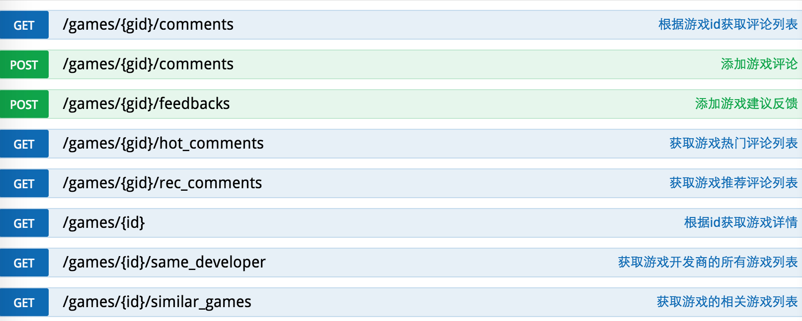
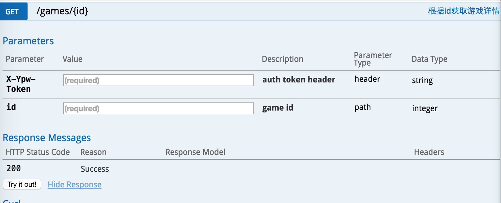

09 May 2016
背景
(游品位) 是一个安卓端的精品游戏应用商店。最近服务端进行了一次架构的重新设计，其中最重要的就是对数据接口进行RESTful改造。
由于历史原因，项目初期的接口仅仅把HTTP协议作为通信协议，应用层协议藏在客户端POST过来的json数据中，这样做的优点只能规避部分浏览器对于url长度不能大于2k的限制(其实只有万恶的IE)，而缺点很明显：需要重新发明轮子再进行一层routing；数据不透明，对程序员不友好，尤其是需要数据分析或者查找线上问题的时候；几乎很难在客户端和HTTP层进行缓存等等。
API设计有多种风格，目前主流的是RESTful和SOAP，这两种在不同的业务场景下，各有优劣，只是在移动互联网开发环境下，趋势是RESTful正在占据绝大部分的份额。
由于网络上对于RESTful的介绍已经很多，推荐大家通过 理解RESTful架构(阮一峰)， 或者 是Roy Thomas Fielding的博士论文 来了解。
本文主要是自己在项目的RESTful API设计实践过程中的一些经验教训和思考，希望和大家一起讨论和分享。
RESTful API的好处
1. 自解释性强，对程序员友好。CRUD 分别使用不同的HTTP动词 GET/POST/PUT/DELETE/PATCH。
2. 基于标准HTTP协议。如无必要，勿增实体。费尽心思规划设计出来的通信协议，未必如http协议这样完整。
3. 丰富的开发支持，无论手机端，web端、服务端，测试、文档、分析系统都有丰富
的库支持。这点很重要，尤其是在开源事业如火如荼的年代，试图自己创造出一套逻辑，
在开发、测试、部署等等所有环境，都会有一种无所适从的感觉。
设计RESTful API的原则:
在设计RESTful API的过程中有一个重要原则：
这个原则包含的意思是:
1. RESTful是一个完整的设计体系，设计的时候尽量遵守标准。
2. RESTful只是一种API设计的风格，并不是什么法律。当设计不符合产品业务发展或者标准存在缺陷或风险的时候，需要敢对RESTful说不。
举例
为了更好地说明RESTful API的设计，这里以 (游品位) 为例。游品位 的愿景是希望搭建一个游戏和人的联接器，所有API设计中最重要的两个资源就是 游戏 和 人。
命名以及动词的使用
- 资源都是复数名词。例如 /games是一个游戏列表，/games/1 表示id为1的游戏，/users/1 表示id为用户. /games/1/comments 表示id为1的游戏的评论列表。命名是RESTful的精髓所在。
- 使用合适的动词， GET /games/1 表示获取id为1的游戏数据，POST /games/1/comments 表示在id为1游戏下创建一条评论资源，DELETE /comments/1 表示删除一个评论， PATCH /users/1 表示修改用户的个人信息。HTTP协议的动词基本上覆盖了CRUD操作。
- 不要过度抽象，一个url只做一件事. 过度抽象意味着参数过多，耦合紧。例如，在游品位中，有各种各种各样的游戏专区，比如
热门游戏， 最新游戏， 内测游戏等等，还有各种各样的筛选和排序规则。如果都使用 /games + 各种参数的话，那么/games的参数将多到可怕，非常不适合客户端的调用。而且那么多的参数耦合在一个接口中，一旦这个接口出现问题, 影响面积将会非常的大。于是我们将 /games 拆分成了 /games/hot, /games/new, /games/beta 等等。
- 对于不符合CRUD的操作，比如
/search, /login， /logout，没有办法转换为资源的，那就这样好了，千万不要为了保证endpoint的 “纯粹性” 而丧失了RESTful最重要的可读性。
- 不同的浏览器会对url的长度有限制(小贴士：这个并不是HTTP协议的限制，只是不同的浏览器有不同的长度限制，其中IE的限制是2083个字节，后来被谣传成HTTP协议对url长度有2KB的限制)。为了减少不必要的麻烦，当某些
查询请求 确实可能出现请求参数较长的情况下，合理的变通，使用POST并无不妥。例如 游品位 中有一个接口是用来查询用户手机上是否有游戏需要更新，当用户手机上需要查询的游戏数量较多的情况下，如果将参数都附着在url上的话，可能会导致url长多超出限制。如果采用分次请求的话又会导致接口的调用复杂化，在这种情况下，我们设计了 POST /users/mine/update 接口。
- 接口中的资源会和数据库表很像，但不要强行统一响应层和存储层的数据格式。保持后端的层次分明，去耦合，有利于后续功能的修改和迭代。
版本放在url里
文档
文档的问题在于：
1. 易于腐烂。尤其对于快速迭代的系统来说，接口的参数，返回的数据类型时刻都有增删改的可能
很容易出现实际接口修改了，而文档没有跟上的情况，导致文档失去了原有的意义。
2. 开发不友好。一般存储在wiki上的文档，和开发、测试环境脱离，不利于前端开发人员的调用。
对此，我们的解决方案是：
将文档写在代码中，有利于后台开发人员在接口变动的时候及时的修改文档。而我们使用了 swagger 文档协议，只要文档遵循固定的格式，就可以利用 swagger 丰富的插件，自动的生成一份在线的文档，而且有些插件还搭配了一套api的开发调用环境。


使用swagger 文档协议，支持工具较多，可以轻松生成各种格式的文档。
通信数据格式
1. 用且仅使用json。可读性，易读性大于天。
2. 使用gzip。压缩数据大小的意义不在于节省流量，毕竟手机上随便一张图的大小都是api响应的几十倍。压缩大小的意义在于提高传输速度。
3. 返回值自动加载嵌套数据，但不要嵌套过深。严格的RESTful对于资源列表的响应要求是返回由资源地址组成的链接列表，
然而这种方式并不利用前端开发的调用，增加了前端调用的复杂性。因此，需要适当地展开资源的嵌套数据。
缓存系统
REST充分利用了HTTP协议的缓存，而HTTP缓存从优先级上有以下几种：
1. Cache-Control：指明当前资源的有效期，控制浏览器是否直接从浏览器缓存取数据还是重新发请求到服务器取数据。
例如在header中设置 Cache-Control: max-age=300; 客户端会在300s内不会请求服务端数据。
2. Last-Modified/If-Modified-Since：服务端比对客户端资源的修改时间来决定是返回完整的响应数据，
还是告诉客户端从本地的缓存中读取(304状态码)。
3. ETag：跟上面的设置相似，只不过服务端比对的是数据的摘要来决定是返回数据还是304状态码。
其中 Cache-Control 能够极大的减少服务端的负载压力。另外两种设置并不会减轻服务端的负载，但是可以减少网络传输的数据流量，提高客户端的加载速度。
安全性
体现在：
1. 一定要使用HTTPS。
2. 每个请求都需要鉴权。
3. 使用rate-limit。
4. GET请求对系统没有影响，PATCH/PUT/DELETE 是幂等的，POST是不安全的。
6. 对于POST请求，使用ETag可以一定程度防止重放的攻击。
7. 对请求参数添加参数内容签名。
总结
1. RESTful API有很多优点，但不要拘泥。要充分的理解项目的业务逻辑，选择最合适自己系统的设计。
2. API的设计不是服务端一个人的事情，要和前端的开发人员进行充分的沟通，学会聆听他们的声音。
02 May 2016
项目需要频繁上线，如何才能降低服务端上线的风险，又降低测试的成本呢？
预发布系统的作用
作为一个手机应用，需要快速迭代和敏捷开发，因此服务端的接口面临频繁上线的需求 一般每周都需要发布正式的版本和功能，最多的情况下一天上线了三次。然而上线前一般都需要经历单元测试、功能回归测试、abtest甚至压力测试，测试人手不足， 如何才能在频繁上线的同时，降低服务端上线的风险和降低测试的成本呢？
app产品服务端的测试工具很多，包括apache bench等，然而这些工具都没有办法解决一个问题：
根据自己的经验，80%的服务端故障发生在上线后的两个小时之内。 如果能够搭建一个和生成环境一样的预发布环境，完全复制生成环境的流量，在正式发布前在预发布环境先发布一遍，就能够让准备发布的版本在不影响用户的情况下接受真实流量的洗礼。
预发布系统有以下显而易见的优点：
- 回归测试：及早发现功能漏洞，测试数据符合用户真实的请求分布，而且无需准备繁多的测试用例，极大降低了测试成本。
- 对比测试：预发布系统和生成环境就是一对完美的abtest，你可以轻易的根据关心的指标找出新版本的代码在哪些方面的有了提升，哪些方面还有不足。
- 压力测试：对于分布式的服务架构，可以将多台服务器的流量复制到一台或几台预发布服务器上，可以直接的知道被测试服务的极限是正常流量的几倍，而且不是对单一接口的测试，而是对服务整体的测试。
使用Gor复制生成环境HTTP流量
Gor 是一个用Go语言开发的一个http流量复制工具。复制流量过程中有listener和replayer两个角色(实际上是一个进程)。

流量复制的流程是:
1. listener监听生产环境端口
2. listener复制http请求，修改目的地址，转发到replayer监听的端口
3. replayer转发请求到测试服务器的端口
4. 测试服务器处理复制的请求
5. replayer丢弃测试服务器返回的响应。
Gor的安装配置和使用
Gor的下载安装特别简单，可以在 https://github.com/buger/gor/releases进行下载。 安装则有两种形式：
1. 直接下载二进制可执行文件，解压即可
2. 通过源码编译安装：
1. 搭建标准的Go语言环境 (http://golang.org/doc/code.html),设置$GOPATH 环境变量
2. go get github.com/buger/gor
3. cd $GOPATH/src/github.com/buger/gor
4. go build生成二进制可执行文件
启动Gor
在生成环境流量入口启动Gor listener:
sudo gor --input-raw :80 --output-tcp replay.local:28020
在测试服务器上启动Gor replayer:
gor --input-tcp replay.local:28020 --output-http http://staging.com
gor 使用listener捕捉请求的时候需要sudo权限
也可以将listener和replayer合二为一：
gor --input-tcp replay.local:28020 --output-http http://staging.com
还可以将流量复制两份到不同的测试服务：
gor --input-tcp :28020 --output-http "http://staging.com" --output-http "http://dev.com"
也可以将流量像负载均衡一样分配到不同的服务器：
gor --input-tcp :28020 --output-http "http://staging.com" --output-http "http://dev.com" --split-output true
另外gor还支持对listener和replayer的rate-limit，流量过滤，以及流量放大：
gor --input-tcp :28020 --output-http "http://staging.com|10"
gor --input-tcp :28020 --output-http "http://staging.com|10"
更多的配置可以查看 文档
预发布系统的搭建
预发布系统主要由测试服务器和 Gor流量复制工具组成，为了查看和分析测试效果，还可以接入各种监控分析系统。
为了将回归测试和压力测试合二为一，我们将线上的五台api服务器的流量复制到了一台preview(预发布)服务器：
1. 部署搭建测试服务，测试服务使用的数据库，消息队列，缓存等等需要生成环境隔离，避免对生产环境造成影响；同时，测试环境使用的数据尽量保证和生成环境一致，以保证测试效果。
2. 在api服务器和preview服务器上安装gor，为了方便，我们直接使用了官方提供的二进制文件
3. 在api服务器上启动gor listener，复制80端口的流量，转发到预发布服务器的28020端口：
sudo gor --input-raw :80 --output-tcp preview:28020
4. 在preview服务器上启动gor replayer， 监听28020端口，同时将请求转发到测试服务器上5000端口
5. 启动测试服务器上的测试进程，监听5000端口
就这么简单，预发布系统就搭建成功了。
非http协议的流量复制
对于不是基于http协议的流量复制，可以使用我司 王斌 维护的流量复制工具 tcpcopy, tcpcopy 支持tcp协议流量的复制、转发、拦截，非常棒的工具，感兴趣的可以研究。因为其安装配置稍显复杂，这里不在赘述。
总结
1. 极少的情况下，Gor会有少量的丢包问题出现，但是不影响测试效果。
2. 建议将Gor的listener和replayer分开，减少对生成环境性能的影响。
3. 部署搭建测试服务，测试服务使用的数据库，消息队列，缓存等等需要生成环境隔离，避免对生产环境造成影响；同时，测试环境使用的数据尽量保证和生成环境一致，以保证测试效果。
4. 由于测试环境和生成环境的数据无法做到实时的同步，所以要注意区分哪些错误是有程序的bug，哪些是由数据不一致导致的。
5. 预发布系统能够一站解决回归测试、abtest和压力测试，然而还是会有局限性：对于比较复杂的业务逻辑，并不能直观的表现出来，需要后台对数据进行进一步的分析比较后才能判断。
附录
- gor: https://github.com/buger/gor
- tcpcopy: https://github.com/wangbin579/tcpcopy
25 Apr 2016
问题背景
运营的同学有一天反映管理后台的一个表单，提交之后，突然页面上的css和js文件都load不出来，而正常的访问url页面则一切正常。查看页面的源码后发现，之前设置的 <base href="/"> 失效了。
查找过程
查找问题的原因，首先列举所有可能出错的环节：
- 提交后服务器逻辑修改了页面。
- 引入的一些js代码里可能修改了base标签。
- chrome的设置导致了base标签失败。
在查看了服务器的代码后发现，服务端在表单提交完成后，只是做了一个重定向到当前页面的操作，并不会修改页面的代码，那么 1 排除。
至于 2 则更加不可能了，因为base 标签的失效，导致页面上所有的js文件都请求到了相对地址，js文件都出现了404错误。js文件连下载都不成功，更不可能执行了。
那文件的罪魁应该是浏览器(chrome)了。于是同样的操作，我在safari上执行了一遍，ok了！
越是灵机一动，这种错误，也许chrome会给一些错误提示。于是点开chrome的检查后台，果然，出现了一个错误：
The XSS Auditor refused to execute a script because
its source code was
found within the request. The auditor was enabled as the server sent
neither an 'X-XSS-Protection' nor 'Content-Security-Policy' header.
查阅了相关资料后发现，这是chrome防止xss跨站脚本攻击添加的安全策略，当提交的request和返回的response中包含同样的js代码时会触发，导致base标签的href没有被设置。
解决办法
既然找到原因了，那么解决办法也很简单：
- 去掉提交的表单中的js代码。
- 如果表单中的js代码无法去掉，则可以设置http 返回的响应header
X-XSS-Protection: 0
因为页面是需要登录的管理后台，所以disable掉这个策略不会影响后台的安全性。对于其他面向用户的站点，还是不建议使用这种方法。
flask的后台可以这样写：
@app.after_request
def add_headers(response):
response.headers.extend({"X-XSS-Protection": 0})
return response
总结
有句名言说的好：排除掉所有不可能的因素，剩下的即使再不可思议，也是真实的答案！
当程序出现问题时，我们可以列举所有可能出错的环节，然后一个个分析排除，总能找到问题的现场和原因。
13 Jul 2015
搜索提示对于当代的搜索引擎已经是标配了。好的搜索提示可以让用户更懒，增加用户对搜索的依赖。对于搜索提示，会有一些特殊的设计需求:
- 速度足够快， 一般要小于用户输入一个字的间隔，大概需要在100ms以内给出结果
- 搜索结果能够自定义排序
- 对于中文搜索，提供拼音搜索可以使用户减少输入法的切换
- 简单的使用场景下提供前缀命中即可，但某些情况下需要提供分词命中(比如quora)
- 搜索的结果数量不需要太多
- 方便扩展
由于速度的要求，必然需要将搜索的term放到内存中，Trie树看上去是最适用的数据结构。然而Trie树单独并不能很好地处理好第二点排序的需求，而且在单独在内存中维护一个Trie树并不是一个快速的解决方案。
选择redis作为数据容器。首先redis作为一个内存数据库能很好地满足我们速度上的需求，其次利用sort-set结构能有效地完成数据的自定义排序、自动去重，而且redis来可以设置过期时间，设置持久化等功能，可以有效地控制内存的大小。
主要功能
- 支持前缀命中
- 支持拼音搜索
- 支持分词命中
- 自定义排序
- 支持自定义数据结果
使用方式
创建SearchPrompt对象
from search_prompt import SearchPrompt
sp = SearchPrompt(scope='', redis_addr='localhost')
添加数据
普通的搜索建议，关键词本身就是需要查询的结果，比如搜索 游 的时候，给出 游品位 这个搜索提示即可，真实的搜索行为发生在用户选择了关键词之后。这种情况下只需要一个包含了以term为key的字典对象里，我们叫做item好了，当item被添加到SearchPrompt中时，它会自动根据term的值生成一个uid，并将item整个数据保存在redis中。
item = {'term': '游品位'}
sp.add(item)
sp.add({'term': '游戏'}, pinyin=True)
sp.add({'term': '好品位'}, pinyin=True, seg=True)
对搜索结果排序, 只需要在item中添加score,
item = {'term': '游品位', 'score':0}
有时候，当我们给出搜索建议的时候，并不仅仅希望只给出关键词本身。例如在应用商店里，搜索梦幻西游的时候，自动给出游戏的icon，简介和下载链接等等。这个时候我们只需要这样:
item = {'term': '游品位 ', 'icon': 'http://test.com/test.png', 'brief':'', 'download_url': 'http://test.com/test.apk'}
sp.add(item)
如果想使用拼音搜索，只需要:
sp.add(item, pinyin=True)
还可以分词, 如果你希望在搜索西游的时候也能返回 梦幻西游:
搜索
print sp.search('游')
print sp.search('you')
print sp.search('好品位', fuzzy=True, limit=1)
输出结果
[{u'term': u'游戏'}, {u'term': u'游品位'}]
[{u'term': u'游戏'}]
[{u'term': u'好品位'}]
删除关键词:
sp.delete({'term': '游品位'})
原理
保存数据:
默认情况下, SearchPrompt会根据term的值生成一个uid, 将item保存在以uid为key的hash结构中
当item中包含uid字段时, 会以uid为key保存数据
def add(self, item, pinyin=False, seg=False):
self.item_check(item)
term = item['term']
score = item.get('score', 0)
uid = item.get('uid')
if not uid:
uid = hashlib.md5(item['term'].encode('utf8')).hexdigest()
self.redis.hset(self.db, uid, json.dumps(item))
分解添加的关键词term
为一个关键词建立所有的搜索索引，比如关键词游品位，当我们要支持前缀匹配的适合，需要将关键词分解为
游
游品
游品位
def prefixs_for_term(self, term, seg=False):
term = term.lower()
prefixs = []
for index, word in enumerate(term):
prefixs.append(term[:index+1])
if seg:
words = jieba.cut(term)
for word in words:
prefixs.append(word)
return prefixs
将关键词转成拼音:
利用pypinyin 将游品位 转成拼音 youpinwei, 把youpinwei当作一个新的关键词分解
切词:
利用jieba分词, 将关键词 游品位 切分成游, 品位
for prefix in self.prefixs_for_term(term, seg):
self._index_prefix(prefix, uid, score=score)
if pinyin:
prefix_pinyin = ''.join(lazy_pinyin(prefix))
self._index_prefix(prefix_pinyin, uid, score=score)
创建索引:
为每一个分解结果创建一个sorted-set, 将uid根据score添加到有序队列中
def _index_prefix(self, prefix, uid, score=0):
self.redis.sadd(self.index, prefix)
self.redis.zadd(self._get_index_key(prefix), uid, score)
搜索:
根据search的参数query找到对应的sorted-set。对于query还可以进行分词和转成拼音依次搜索, 然后将搜索结果集合并。
def search(self, query, limit=5, fuzzy=False):
if not query: return []
if fuzzy:
search_querys = self.normalize(query)
else:
search_querys = [query]
cache_key = self._get_index_key(('|').join(search_querys))
if not self.redis.exists(cache_key):
self.redis.zinterstore(cache_key,
map(lambda x:self._get_index_key(x), search_querys))
ids = self.redis.zrevrange(cache_key, 0, limit)
if not ids: return ids
return map(lambda x:json.loads(x), self.redis.hmget(self.db, *ids))
22 Jun 2015
flask-login 提供不同的登录验证方式，对于web环境可以使用 user_loader 的装饰器作为登录的验证函数, 它会有自动地帮你处理cookie：
from flask.ext.login import LoginManager
login_manager = LoginManager()
@login_manager.user_loader
def load_user(userid):
return User.get(userid)
flask-login 会将loaduser返回的user对象赋给currentuser这个全局对象
同样，当你是通过提供api的方式来提供服务的，不使用cookie，而是使用http的头部字段或者通过在请求url加入令牌的方式来进行用户验证，那userloader就不太合适了，因为userloader 的内部实现是通过读取cookie来实现的。这种情况下， 你就可以使用requestloader的装饰器来作为登录的验证函数.requestloader装饰器的返回值和user_loader一样，None或者user对象,一个例子:
@login_manager.request_loader
def load_user_from_request(request):
token = request.headers.get('UserToken')
if token:
user = User.query.filter(User.token == token ).first()
return user
return None
注意这里的 loaduserfrom_request的参数request 就是flask中的全局对象, 它包含了一个http请求的全部属性和一些常用的方法, 比如请求的header、body、method等等。
这两种验证方式适用不同的业务环境，然而当某种环境同时需要两种登录验证方式怎么办?
比如当我们需要给移动端提供api服务时，通常我们都需要提供一个web端的admin后台给内容或者运营的伙伴使用，这个是我在工作中实际遇到的需求，这个时候我们该怎么办呢？
首先，我直接尝试提供了两种方式，然而flask-login 的加载user的方法是有先后顺序的，摘录一段flask-login的源码:
if is_missing_user_id:
cookie_name = config.get('REMEMBER_COOKIE_NAME', COOKIE_NAME)
header_name = config.get('AUTH_HEADER_NAME', AUTH_HEADER_NAME)
has_cookie = (cookie_name in request.cookies and
session.get('remember') != 'clear')
if has_cookie:
return self._load_from_cookie(request.cookies[cookie_name])
elif self.request_callback:
return self._load_from_request(request)
elif header_name in request.headers:
return self._load_from_header(request.headers[header_name])
也就是说flask-login会优先检查请求的cookie，当发现用户cookie不存在的时候才会根据request来验证，这显然不是我想要的，我希望能够根据请求来决定使用哪种方式来进行用户验证。
首先，我们将api和web管理后台分为两个不同的blueprint: api 和 admin。
然后我们利用一个全局变量 loadusermethods = {} 来保存不同blueprint的验证用户的函数:
load_user_methods = {}
from api import api_blueprint
load_user_methods[api_blueprint.name] = api_blueprint.load_user
from admin import admin_blueprint
load_user_methods[admin_blueprint.name] = admin_blueprint.load_user
@login_manager.user_loader
def load_user(id):
if request.blueprint in load_user_methods:
method = load_user_methods.get(request.blueprint)
return method(id)
return None